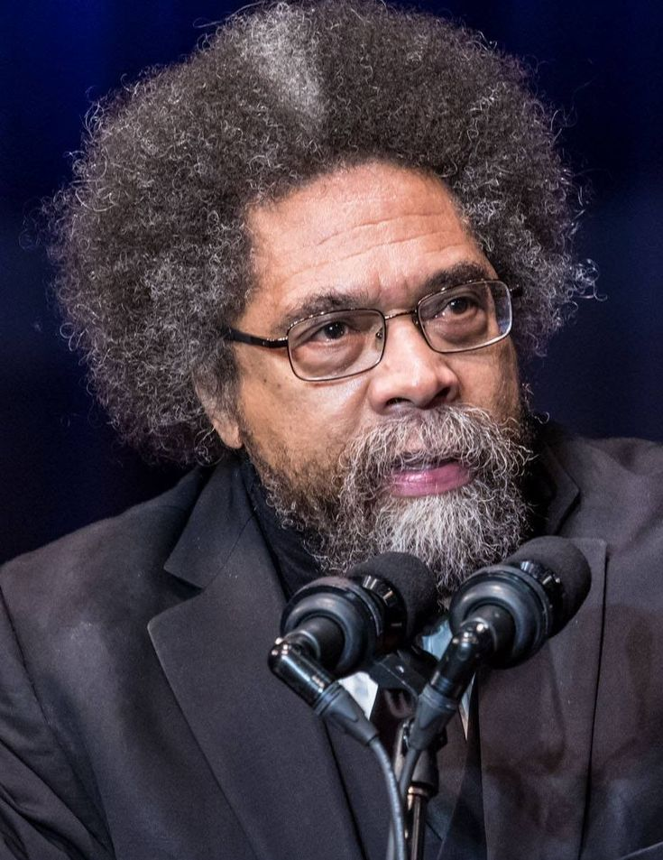

Who Is Cornel West?
Cornel West is an American philosopher, public intellectual, scholar, author, teacher, and social critic whose work examines race, democracy, justice, religion, poverty, capitalism, and the moral problems of modern society. He is one of the most prominent contemporary voices associated with African American philosophy and the American tradition of pragmatism.
Cornel West's philosophy is especially known for prophetic pragmatism, an approach that combines American pragmatist philosophy with a strong concern for social suffering, democratic struggle, moral courage, and the voices of people who are marginalized or excluded from political power.
West argues that philosophy should not remain isolated within universities or abstract intellectual systems. For him, philosophical reflection should engage directly with the problems faced by ordinary human beings, including racism, economic inequality, violence, political injustice, and the loss of democratic participation.
His work draws upon a remarkably wide range of traditions, including Christianity, Black intellectual thought, American pragmatism, Marxism, existentialism, jazz, literature, and democratic political theory. Through this combination, Cornel West has developed a distinctive philosophical voice centered on truth, justice, love, courage, hope, and the struggle for a more democratic society.
Cornel West: Quick Facts
- Full name — Cornel Ronald West
- Born — June 2, 1953
- Nationality — American
- Philosophical tradition — American pragmatism, African American philosophy, democratic thought, and social criticism
- Major fields — Philosophy, religion, political thought, race, democracy, ethics, and social criticism
- Major subjects — Race, justice, democracy, poverty, religion, love, hope, and social inequality
- Famous philosophical approach — Prophetic pragmatism
- Important intellectual influences — W. E. B. Du Bois, Martin Luther King Jr., John Dewey, William James, Ralph Waldo Emerson, Karl Marx, and Christian prophetic traditions
- Famous book — Race Matters
- Another major work — Democracy Matters
- Known for — Philosophy connected with public life, social justice, democracy, and the African American intellectual tradition
- Intellectual role — Philosopher, scholar, author, teacher, and public intellectual
Cornel West's Early Life and Education

Cornel West was born on June 2, 1953, in Tulsa, Oklahoma, and grew up during a period shaped by the Civil Rights Movement and intense struggles over racial justice, political equality, and the meaning of American democracy. His family and religious community provided an important moral background, while the wider realities of segregation and racial inequality helped form the historical world from which his later philosophical concerns about race, power, dignity, democracy, and social transformation emerged.
From an early stage in his intellectual development, West was drawn to philosophy, history, religion, literature, and political thought. He became deeply interested in the relationship between abstract ideas and the concrete realities of social life, particularly the gap between ideals of freedom and equality and the continuing existence of poverty, racism, exclusion, and violence. This tension would remain central to his work as both a philosopher and a public intellectual.
West completed his undergraduate education at Harvard University in 1973, graduating magna cum laude after three years with a degree in Near Eastern languages and civilization. He then pursued graduate study in philosophy at Princeton University, where he received both his master's degree and Ph.D. His academic formation brought him into sustained contact with major Western philosophical traditions while encouraging a critical engagement with their historical limits and exclusions.
This broad intellectual formation became central to Cornel West's career. Rather than remaining within a single philosophical school, he developed a distinctive style of thought moving between pragmatism, theology, political theory, literature, music, history, and cultural criticism. Throughout these different fields, however, his work repeatedly returns to fundamental questions concerning truth, justice, democracy, suffering, moral courage, and the dignity of human beings living under unequal social conditions.
Why Is Cornel West Important?
Cornel West is important because he has brought philosophy into direct conversation with some of the most urgent moral and political problems of contemporary society. His work asks how philosophical ideas about truth, justice, democracy, and morality should respond to racism, poverty, violence, inequality, and the suffering experienced by marginalized communities. In this sense, West treats philosophy not merely as an academic discipline but as a critical practice concerned with the conditions under which people actually live.
West is also important for his contribution to African American philosophy and the broader Black intellectual tradition. He emphasizes that philosophical reflection cannot be understood only through a narrow canon of European thinkers, since struggles against slavery, segregation, colonialism, and racial oppression have generated profound ideas about freedom, identity, democracy, power, and human dignity. His work therefore challenges inherited boundaries concerning what counts as serious philosophical thought and whose intellectual traditions deserve sustained study.
His idea of prophetic pragmatism provides a distinctive form of cultural criticism and political engagement. West draws upon American pragmatism's emphasis on fallibility, experience, and practical consequences, while joining it to prophetic traditions of moral criticism directed against injustice and domination. He therefore rejects both detached abstraction and uncritical activism, insisting that philosophical thought should remain open to revision while also refusing moral indifference toward unnecessary suffering.
West has also become one of the best-known examples of the modern public intellectual. Through books, teaching, lectures, interviews, political debate, and cultural commentary, he has attempted to make difficult philosophical questions accessible beyond universities. His importance lies partly in this effort to connect scholarship with democratic public life, encouraging wider audiences to think critically about race, class, religion, capitalism, democracy, and the moral responsibilities of citizenship.
The Historical Context of Cornel West's Philosophy
Cornel West developed his philosophical work during the late twentieth and early twenty-first centuries, a period shaped by the achievements and unfinished struggles of the Civil Rights Movement, continuing racial inequality, economic transformation, globalization, and recurring debates about the future of democracy in the United States. His thought emerged from a society that publicly affirmed ideals of liberty and equality while continuing to display deep social divisions in wealth, political influence, and racial opportunity.
Although legal segregation was dismantled through major civil rights victories, racial inequality did not simply disappear. West's philosophy examines the gap between democratic ideals and the unequal realities experienced by many citizens, especially those affected by racism, poverty, inadequate public institutions, and political marginalization. He is therefore concerned not only with formal legal equality but also with the historical and institutional conditions that shape people's actual possibilities for participation, security, and social recognition.
His work also developed amid growing concern about economic inequality and the influence of wealth upon public life. West became interested in the moral consequences of social arrangements that measure success primarily through profit, efficiency, or accumulation while leaving persistent poverty and human suffering insufficiently addressed. This concern connects his political criticism with broader questions about capitalism, class, democratic participation, and the relationship between economic power and genuine political equality.
This historical context helps explain why Cornel West combines pragmatism with prophetic moral criticism. He does not simply ask whether a political system is stable or economically successful; he asks whom it serves, whom it excludes, and whether its institutions remain open to criticism from those who suffer under existing structures of power. Democracy, for West, must therefore remain a self-critical project rather than a finished achievement that can be taken for granted.
Cornel West's Main Philosophical Ideas
1. Prophetic Pragmatism
Cornel West's most distinctive philosophical approach is prophetic pragmatism. It combines the practical, experimental, and fallibilist orientation of American pragmatism with a moral commitment to confronting injustice, suffering, and oppression. Rather than treating philosophy as a search for timeless certainty detached from history, West emphasizes critical inquiry and effective action. Yet practical consequences alone are not enough: philosophical reflection must also ask whether existing conditions are morally defensible and whether they preserve human dignity.
2. Democracy Requires Constant Struggle
West argues that democracy should not be understood as a finished political system that automatically guarantees justice once elections and institutions exist. Democratic life requires continual participation, criticism, courage, and resistance against forms of domination that allow concentrated wealth or political power to silence ordinary citizens and marginalized communities. A democracy must therefore remain capable of self-correction and must continually confront the gap between its public ideals and its actual social realities.
3. Race Is a Philosophical and Political Question
West examines race not merely as a social classification but as a problem connected with history, identity, power, knowledge, moral responsibility, and democratic life. He argues that serious philosophy must confront the ways racial domination has shaped modern societies and their intellectual traditions. The study of race therefore requires attention to institutions and historical structures as well as individual prejudice, because unequal power can survive even after a society formally declares its commitment to equality.
4. Love and Justice Are Connected
A recurring theme in Cornel West's thought is the relationship between love and justice. Political struggle can become destructive when it loses all concern for the humanity of others, while love without a commitment to justice can become passive and ignore suffering produced by oppression. West therefore treats love as more than private sentiment: it can represent a moral commitment to human dignity, solidarity, compassion, and courageous criticism of institutions that degrade or marginalize people.
5. Hope Requires Courage
West often emphasizes that hope should not mean passive optimism or confidence that history will automatically move toward improvement. Genuine hope requires courage, action, and the willingness to continue struggling for justice even when success is uncertain. Human beings must often act without guarantees, and this gives West's thought an important existential dimension. The moral value of resistance does not disappear simply because victory cannot be predicted or because the historical situation appears deeply discouraging.
What Is Cornel West's Prophetic Pragmatism?
Prophetic pragmatism is the philosophical approach most closely associated with Cornel West and receives a major formulation in his work on the history of American pragmatism. It begins with the pragmatist belief that ideas should remain connected with experience, inquiry, action, and the practical problems faced by human beings. Philosophy should not become a purely abstract search for certainty detached from history, because beliefs must remain open to criticism, testing, revision, and evaluation through their consequences.
The word prophetic adds an essential moral and cultural dimension to this approach. West draws upon prophetic traditions that challenge injustice and speak critically against domination, wealth, violence, hypocrisy, and exclusion. Prophetic criticism does not simply describe society or explain how power operates; it asks whether prevailing institutions are morally defensible and calls attention to the suffering that comfortable or powerful groups may prefer not to see.
West's prophetic pragmatism therefore rejects both blind idealism and passive acceptance of existing reality. Human knowledge is limited, social problems are complex, and political action can produce unintended consequences; nevertheless, uncertainty cannot become an excuse for indifference. Philosophical humility must be combined with moral seriousness. One should remain willing to revise beliefs and strategies while continuing to oppose forms of suffering and domination that violate the dignity of human beings.
This approach also emphasizes the importance of democratic criticism and the voices of ordinary people. Philosophical knowledge should not belong exclusively to specialists or powerful institutions, especially when communities that have experienced marginalization possess forms of historical experience ignored by dominant perspectives. West's prophetic pragmatism therefore joins intellectual inquiry to public engagement, seeking forms of cultural and political criticism capable of expanding democratic participation and strengthening human freedom.
Cornel West and American Pragmatism
Cornel West is strongly connected with the tradition of American pragmatism, which includes thinkers such as Charles Sanders Peirce, William James, John Dewey, and, in West's broader genealogy, Ralph Waldo Emerson as an important precursor. Pragmatism emphasizes inquiry, experience, fallibility, community, and the consequences of ideas rather than the discovery of completely final philosophical foundations. West's historical study The American Evasion of Philosophy traces the development, decline, and resurgence of this tradition.
West values pragmatism because it challenges the desire for absolute certainty and recognizes that human knowledge develops within changing historical circumstances. Beliefs should remain open to criticism and revision rather than being protected as unquestionable foundations. This intellectual humility is particularly important for democratic life, where different perspectives must be confronted and tested publicly. For West, pragmatism offers resources for combining serious inquiry with responsiveness to historical change.
However, West also resists versions of pragmatism that become detached from questions of power, suffering, and justice. A philosophy concerned only with what appears to work may fail to ask who benefits from existing arrangements and who continues to suffer because those arrangements remain unchanged. West thus seeks a pragmatism that does not abandon moral criticism merely because universal certainty is unavailable or because political solutions must remain experimental and open to revision.
His contribution to American pragmatism therefore gives the tradition a stronger engagement with race, class, democracy, religion, and social struggle. West places particular importance on John Dewey's democratic orientation while also bringing the Black intellectual tradition and prophetic Christianity into conversation with pragmatist thought. The result is an approach in which philosophy becomes a form of cultural criticism and public engagement directed toward expanding human freedom and confronting unjust structures of power.
Cornel West's Philosophy of Race
Race is one of the central subjects of Cornel West's philosophical work. West argues that racism should not be understood only as individual prejudice or personal hostility. It is also connected with historical institutions, cultural beliefs, political structures, and economic arrangements that have shaped opportunities and social power. A serious philosophical account of race must therefore examine how historical domination continues to influence the present rather than treating racial inequality as merely a collection of isolated individual attitudes.
West is particularly concerned with the psychological and moral consequences of racial oppression. Racism can influence how people are represented, valued, and understood within a society, creating experiences of humiliation, exclusion, fear, alienation, and hopelessness that cannot be fully explained through economic statistics alone. His work therefore examines the cultural and existential dimensions of racial domination alongside questions concerning law, institutions, political power, and material inequality.
His philosophy challenges the belief that a society becomes genuinely equal simply because it formally rejects discrimination or establishes legal rights. West asks whether deeper inequalities remain after legal reforms and whether democratic institutions are willing to confront the historical conditions that continue to shape social life. Formal equality can coexist with unequal access to education, employment, security, political influence, and social recognition, making the struggle for racial justice an unfinished democratic project.
West also emphasizes the importance of the Black intellectual tradition. He argues that philosophical reflections produced through struggles against slavery, segregation, racism, and exclusion are essential contributions to human thought rather than marginal additions to an otherwise complete philosophical canon. Thinkers and movements emerging from these struggles have developed important ideas about freedom, identity, democracy, resistance, and dignity, and West insists that these ideas deserve a central place in philosophical and political inquiry.
Cornel West's Race Matters
Race Matters, first published in 1993, is one of Cornel West's best-known works and played a major role in establishing his public reputation as a leading Black intellectual. The book examines racial inequality in the United States and argues that serious public discussion must confront both the historical roots and continuing consequences of racism. West refuses to treat race as a secondary issue that can be explained away through a single political, economic, or cultural argument.
West criticizes approaches that reduce racial problems to one cause alone. Economic inequality matters, but so do culture, history, political power, psychological experience, moral attitudes, and the ways communities are represented in public life. His analysis therefore treats race as a complex social reality requiring several forms of explanation. The book challenges both simplistic optimism and narrow ideological accounts that ignore dimensions of racial suffering that cannot be captured by a single theory.
A major concern in Race Matters is the experience of nihilism, hopelessness, and despair. West argues that persistent injustice can damage not only material conditions but also people's sense of possibility, dignity, and meaningful belonging within society. Economic deprivation and political exclusion may therefore have profound cultural and existential consequences. His analysis asks what forms of moral, communal, and democratic renewal might resist the destructive effects of prolonged social abandonment.
The book remains influential because it connects philosophical questions with public life in an accessible but intellectually ambitious way. West asks readers to examine how a democratic society can proclaim commitments to freedom and equality while continuing to struggle with racial inequality, poverty, violence, and unequal access to social power. Its importance lies partly in its insistence that public discussion must confront uncomfortable realities rather than relying upon abstract national ideals detached from lived experience.
Cornel West on Democracy
Democracy occupies a central position in Cornel West's philosophy. West does not define democracy simply as elections, political parties, constitutions, or formal government institutions. He understands democratic life as an ongoing ethical and political practice requiring participation, criticism, public discussion, and concern for the dignity of others. Democratic institutions are necessary, but they cannot by themselves guarantee a genuinely democratic culture if citizens lack meaningful opportunities to influence the conditions of their lives.
West argues that democracy becomes weak when citizens become passive and allow wealth, corporations, political elites, or powerful institutions to dominate public life. A functioning democracy requires people who are willing to question authority and defend the right of marginalized groups to participate in public debate. His concern is therefore not only with the formal existence of political rights but also with the unequal distribution of social power that can determine whose voices are heard and whose experiences are ignored.
He also emphasizes the importance of disagreement. Democracy does not require everyone to think alike, nor does political conflict necessarily represent the failure of democratic life. Rather, democracy requires institutions and social practices capable of managing disagreement without reducing opponents to enemies or abandoning the principle of human dignity. Citizens must learn to criticize deeply held beliefs while remaining open to dialogue, revision, and the possibility that their own political assumptions may be incomplete.
For West, democracy is therefore always incomplete and must continually be renewed through struggle and self-criticism. A society should not assume that it is democratic simply because it possesses democratic institutions; it must ask whether ordinary people actually possess meaningful power and whether excluded communities can challenge existing arrangements. Democracy becomes a living practice rather than a permanent achievement, dependent upon courage, organized participation, critical intelligence, and continuing resistance to domination.
Cornel West's Democracy Matters
In Democracy Matters, published in 2004, Cornel West examines threats to democratic culture and political participation in the contemporary United States. He argues that democracy depends not only upon constitutions and legal institutions but also upon habits of courage, critical thinking, public engagement, and a willingness to confront injustice. Democratic societies require citizens capable of questioning authority rather than simply accepting political power as legitimate because it operates through established institutions.
West is particularly concerned about political cultures in which fear and insecurity become powerful tools for limiting public discussion. When citizens are encouraged to fear one another or to accept authority without criticism, democratic participation can gradually weaken and political power can become increasingly concentrated. His argument therefore connects democracy with moral courage: people must remain willing to speak critically even when dissent is unpopular or when established institutions present themselves as beyond serious public questioning.
The book also continues West's criticism of economic inequality and concentrated social power. Extreme disparities of wealth can influence political institutions and create major differences in the ability of citizens to make their voices heard. Democracy becomes difficult to sustain when political equality exists only formally while access to media, education, resources, and institutional influence remains deeply unequal. West therefore links democratic renewal with broader questions concerning economic justice and the distribution of social power.
West's central message is that democracy requires active citizens and cannot be treated as a machine that functions automatically. People must remain willing to learn, criticize, organize, listen to different perspectives, and resist injustice. Democratic life is fragile because its institutions depend upon human habits and moral commitments that can weaken over time. For West, the defense of democracy therefore requires continuous participation, self-examination, and a refusal to allow fear, wealth, or political conformity to silence criticism.
Cornel West on Justice and Social Justice
Justice is one of the central moral concerns of Cornel West's philosophy. He believes that philosophical discussions about society should begin with serious attention to those who suffer from poverty, racism, violence, exclusion, and unequal distributions of political and economic power. This orientation gives his thought a distinctive moral perspective: societies should not be judged only by their achievements or wealth, but also by how they treat vulnerable people and whether unnecessary suffering is accepted as normal.
West's understanding of social justice goes beyond charity or individual kindness. Helping particular people is important, but philosophical and political analysis must also examine the structures that repeatedly produce inequality. Laws, institutions, economic systems, educational arrangements, and cultural assumptions can influence who receives opportunities and who remains marginalized. Justice therefore requires attention to the relationship between individual actions and the larger systems within which those actions occur.
He consequently combines moral concern with political criticism. A just society cannot simply celebrate individual success while ignoring the social conditions that make success easier for some groups and more difficult for others. West does not deny the importance of personal responsibility, but he argues that serious analysis must also confront structural inequality. Philosophical reflection on justice should therefore ask how freedom, responsibility, opportunity, and power are actually distributed rather than assuming equal conditions already exist.
West also insists that the struggle for justice should preserve human dignity. Political movements can become morally dangerous when hatred completely replaces concern for humanity or when opponents are treated as less than human. For this reason, his philosophy repeatedly returns to the relationship between justice, compassion, courage, and love. The pursuit of social transformation must remain morally self-critical, resisting injustice without reproducing the contempt and dehumanization that have often accompanied oppressive systems themselves.
Cornel West on Religion and Christianity
Religion, particularly Christianity and the Black prophetic tradition, plays an important role in Cornel West's intellectual life. His philosophical work draws upon the idea that religious belief should not become a justification for comfort, privilege, or obedience to unjust forms of authority. Instead, prophetic religion directs moral attention toward suffering and challenges hypocrisy when societies profess ideals of love or justice while tolerating exploitation, exclusion, and the degradation of vulnerable human beings.
West is especially interested in traditions and figures that use religious language to challenge injustice rather than simply to preserve existing power. In this perspective, faith is connected with solidarity with the poor, criticism of oppression, and the willingness to confront powerful institutions when they violate basic principles of human dignity. Prophetic religion therefore contains a critical rather than merely consoling function, calling individuals and communities to examine the moral consequences of their social arrangements.
His use of Christianity does not mean that his philosophy is limited to theological questions or intended only for religious believers. West frequently places religious ideas in conversation with secular philosophy, pragmatism, political theory, literature, music, and democratic thought. Religion becomes one important source among several for examining how human beings should respond to suffering and injustice. His work thus moves across the boundary between theological reflection and broader forms of cultural and philosophical criticism.
West's philosophy of religion therefore emphasizes ethical and public action rather than purely private belief. He is interested in what religious convictions produce in social life and whether faith encourages people to confront injustice or instead becomes a way of avoiding difficult moral and political responsibilities. Religious language, in this sense, must remain open to self-criticism, because traditions devoted to liberation can also be used to protect privilege when they lose contact with the suffering of others.
Cornel West on Love
Love is a major theme in Cornel West's philosophy, although he does not treat it as merely a private emotion or romantic feeling. Love can also be understood as a moral and political commitment to recognizing the dignity of other people and refusing indifference toward their suffering. This broader understanding allows West to connect personal ethical life with struggles for justice, suggesting that genuine concern for human beings must extend beyond sympathy into solidarity and a willingness to oppose degrading social conditions.
West believes that justice without love can become cold, mechanical, and potentially cruel. A political movement may possess persuasive arguments about inequality while still failing to understand the emotional and human realities of the people it claims to defend. Moral concern must therefore remain connected with compassion and an awareness of shared vulnerability. Otherwise, the pursuit of justice can reproduce forms of contempt, resentment, or dehumanization that contradict the very values that originally motivated political resistance.
At the same time, West does not believe that love means avoiding conflict or preserving peace at any cost. Love can require criticism, resistance, and difficult confrontation. To care about human beings may involve challenging institutions and traditions that cause them harm rather than remaining silent in the name of social harmony. In this sense, love is not opposed to political struggle; it can provide the moral basis for struggle by refusing to accept suffering and humiliation as inevitable or morally insignificant.
This understanding of love connects West with the legacy of Martin Luther King Jr. and other figures who attempted to combine moral compassion with active resistance to injustice. Love becomes a source of courage rather than passivity and encourages individuals to struggle without abandoning recognition of shared human dignity. The ideal is demanding because it requires opposition to injustice without surrendering completely to hatred, reminding political movements that the means of struggle also shape the moral character of the world they seek to create.
Cornel West on Hope and Courage
Cornel West frequently distinguishes genuine hope from simple optimism. Optimism may depend upon the expectation that circumstances will naturally improve, whereas hope can continue even when there is no guarantee of success and when historical conditions provide strong reasons for discouragement. This distinction allows West to treat hope as an active moral orientation rather than a prediction about the future. One can hope and act responsibly without claiming to know that history will ultimately reward one's efforts.
Hope therefore requires courage. Human beings may recognize that injustice is deeply rooted and that their individual efforts cannot immediately transform society. Nevertheless, West argues that the absence of certainty does not remove the moral importance of acting against suffering and defending human dignity. Courage involves accepting vulnerability and possible failure while continuing to act according to one's deepest commitments. In this sense, hope becomes most meaningful precisely when easy confidence is unavailable.
This idea gives West's philosophy an important existential dimension. People must make choices without knowing whether their efforts will succeed or whether the future will justify their sacrifices. A commitment to justice often involves acting under conditions of uncertainty, accepting disappointment, and continuing to struggle after repeated defeats. West therefore rejects the idea that moral action is valuable only when success is likely, emphasizing the importance of character, commitment, and responsibility in difficult historical circumstances.
West's conception of hope is consequently closely connected with responsibility and collective action. Rather than waiting for history to produce progress automatically, individuals and communities must participate in creating the future through solidarity, criticism, organization, and courageous engagement. Hope becomes meaningful through what people do in response to uncertainty and suffering. It is therefore neither passive expectation nor naïve confidence, but a disciplined refusal to surrender moral responsibility when circumstances appear overwhelming.
Cornel West's Criticism of Capitalism
Cornel West has frequently criticized forms of capitalism in which profit and economic growth are placed above human dignity and social well-being. His concern is not simply that people possess different amounts of wealth, but that extreme inequality can influence political power, education, housing, health, employment, and the ability of citizens to participate meaningfully in democratic life. Economic arrangements must therefore be evaluated not only by productivity but also by their consequences for vulnerable communities and democratic equality.
West argues that market values can become destructive when they are allowed to dominate every area of human existence. Not everything that matters can be measured adequately through profit, efficiency, competition, or financial success. Friendship, education, democratic participation, moral responsibility, cultural life, and human dignity involve forms of value that cannot easily be reduced to economic calculation. His criticism therefore challenges the tendency to treat market success as the ultimate measure of personal or social worth.
His criticism also examines the relationship between capitalism, poverty, and social abandonment. West asks why societies capable of producing enormous wealth continue to tolerate severe deprivation and whether economic systems should be judged partly according to how they treat those with the least social and political power. These questions connect economic analysis with ethics, because persistent poverty is not simply a technical problem but also raises questions about collective responsibility, political priorities, and moral indifference.
West's economic thought is therefore closely connected with his broader philosophy of democracy and justice. Political freedom can become limited when extreme inequality allows wealth to exercise disproportionate influence over public institutions and when large numbers of people lack the resources necessary to exercise meaningful control over their lives. His criticism does not separate economics from moral and democratic questions; instead, it asks whether a society can claim genuine political equality while economic power remains profoundly concentrated and social opportunities remain deeply unequal.
Cornel West as a Public Intellectual
Cornel West is widely known as a public intellectual, meaning that he attempts to bring philosophical and academic ideas into wider democratic discussion. Throughout his career, he has moved between universities, religious institutions, lectures, interviews, public debates, and political activism. West has consistently argued that intellectual work should not remain limited to academic specialists when the questions being studied directly concern the lives, suffering, and political possibilities of ordinary people.
West's public role reflects his understanding of democracy as a practice requiring informed participation and critical discussion. Citizens need access to ideas and arguments if they are to participate meaningfully in political life and challenge institutions that exercise power over them. Philosophy can therefore contribute to democracy by questioning assumptions that governments, corporations, cultural institutions, or intellectual elites may prefer to leave unexamined. Public thought, for West, is part of democratic responsibility rather than a distraction from serious philosophical work.
His intellectual style often combines academic argument with references to music, literature, religion, history, popular culture, and the Black prophetic tradition. This approach challenges a strict boundary between professional philosophy and wider public conversation. West believes that philosophical insight can emerge from many forms of human experience and that intellectual traditions should not be restricted to specialized academic language. His use of different cultural forms also reflects his effort to communicate difficult ideas to audiences beyond the university.
West's career raises an important philosophical question about the responsibility of intellectuals. Should scholars remain detached observers of society, or do they have obligations to participate publicly when their knowledge can illuminate injustice and political problems? West strongly supports the second possibility, although this role can create controversy. For him, intellectual seriousness does not require political silence; philosophy can become a form of courageous public criticism when it remains accountable to truth, suffering, and democratic dialogue.
Cornel West and W. E. B. Du Bois
W. E. B. Du Bois is one of the most important intellectual figures in Cornel West's understanding of the African American tradition. Du Bois developed influential analyses of race, identity, history, democracy, and the experience of Black Americans, and West has repeatedly emphasized the philosophical importance of his work. Du Bois represents for West an example of an intellectual who refused to remain confined within a single academic discipline while confronting the moral and political contradictions of modern American society.
Both thinkers examine the contradiction between democratic ideals and racial inequality. The United States has often presented itself as a society committed to freedom and equality, yet its history includes slavery, segregation, discrimination, and continuing forms of racial inequality. For both Du Bois and West, these contradictions cannot be dismissed as accidental exceptions to an otherwise complete democracy. They require sustained historical and philosophical examination of how race and power have shaped American institutions and public ideals.
West also shares Du Bois's broad intellectual style. Neither thinker can easily be confined to a single discipline, because their work moves between philosophy, history, sociology, politics, literature, religion, and public criticism. This interdisciplinary approach reflects the belief that complex social problems cannot always be understood from one perspective alone. Questions about race, for example, involve historical memory, economic power, psychological experience, cultural identity, and political institutions simultaneously.
West's engagement with Du Bois helps establish a historical continuity within African American intellectual thought. He argues that Black thinkers have produced major philosophical reflections on democracy, identity, freedom, and human dignity and that these contributions should be treated as central rather than peripheral to intellectual history. By emphasizing Du Bois's legacy, West also challenges narrow definitions of philosophy that overlook important forms of reflection developed outside traditional European philosophical institutions.
Cornel West and Martin Luther King Jr.
Martin Luther King Jr. is another major influence on Cornel West's thought and public life. West is particularly interested in King's attempt to combine religious faith, moral philosophy, democratic activism, and nonviolent resistance against racial injustice. King also connected racial equality with economic justice and opposition to violence, demonstrating that democratic criticism could extend beyond demands for formal legal rights toward a broader examination of social structures and moral responsibilities.
West shares King's belief that political struggle should remain connected with moral principles. The purpose of resistance is not simply to defeat an opponent but to challenge unjust conditions while maintaining concern for human dignity. This idea strongly influences West's discussions of love and justice. Love does not require passive acceptance of oppression; rather, it can provide the moral courage necessary to resist injustice without allowing political struggle to become entirely governed by hatred or the desire for revenge.
Both King and West also criticize the tendency to treat democracy as a completed achievement. Legal rights and political institutions are essential, but democracy requires continuing moral and political effort. Citizens must confront poverty, racism, violence, and other forms of inequality rather than assuming that historical progress will continue automatically. West's interpretation of King's legacy therefore emphasizes democratic struggle as an unfinished process in which each generation must examine whether public institutions genuinely serve human dignity.
West's interpretation of King's legacy also emphasizes courage in the face of uncertainty. King acted under conditions of danger and could not know that his efforts would succeed, demonstrating that moral action does not require a guarantee of victory. This connection helps explain West's emphasis on hope as courageous commitment rather than simple optimism. People remain responsible for confronting injustice even when historical circumstances are discouraging and the future provides no certainty that their sacrifices will produce immediate change.
Cornel West and Richard Rorty
Cornel West is often discussed alongside Richard Rorty because both thinkers were deeply influenced by American pragmatism and questioned traditional attempts to establish completely certain philosophical foundations for knowledge. Both emphasized the historical, contingent, and practical character of human inquiry and rejected the idea that philosophy could simply discover an unquestionable standpoint outside history. Their work therefore represents important but different developments within the broad pragmatist tradition of the twentieth century.
West and Rorty nevertheless developed significant differences in philosophical emphasis. West placed much stronger attention on race, religion, social suffering, and the moral significance of marginalized communities. He believed that pragmatism should engage directly with the historical realities of oppression rather than concentrating primarily on philosophical debates about language, culture, and the limits of foundational knowledge. For West, questions of power and suffering are not secondary political concerns but central problems for philosophy.
West also retained a stronger connection with prophetic religious traditions. Although he shared pragmatism's rejection of absolute philosophical certainty, he continued to employ moral and religious language in criticizing injustice and defending solidarity with people experiencing poverty and oppression. His prophetic pragmatism attempts to combine intellectual fallibilism with moral seriousness, arguing that the absence of ultimate certainty does not require philosophical neutrality toward domination, cruelty, or unnecessary human suffering.
Their relationship illustrates the diversity within modern pragmatism. Pragmatist philosophy can develop toward questions of language and culture, toward democratic education and social reform, or, in West's case, toward a form of prophetic social criticism centered on race, justice, religion, and democratic struggle. Comparing West with Rorty therefore helps clarify West's distinctive contribution: he transformed pragmatist themes of fallibility and historical inquiry by placing them in sustained conversation with Black intellectual traditions and moral criticism of structures of domination.
Cornel West and Philosophy of Religion
Cornel West contributes to philosophy of religion by examining how religious traditions influence moral, cultural, and political life. He is less interested in treating religion only as a collection of abstract theological propositions and more concerned with the practical and ethical consequences of religious belief. His work asks what forms of character, community, solidarity, or political action particular religious traditions encourage and whether those traditions remain responsive to the suffering of people living under unjust conditions.
West draws upon the idea of prophetic religion, which challenges communities to examine whether their institutions serve justice or reinforce domination. Religious traditions can become sources of moral courage when they defend the oppressed and criticize hypocrisy, but they can also become dangerous when they are used to justify inequality, nationalism, exclusion, or unquestioning obedience to authority. Prophetic criticism therefore directs moral attention toward the gap between professed religious ideals and actual social practices.
His thought avoids a simple opposition between religion and secular philosophy. Both can contribute to moral reflection, and both can become limited when they ignore concrete human suffering or become detached from historical realities. West places pragmatism, Christianity, Black intellectual traditions, and political theory into conversation rather than insisting that one source possesses a complete monopoly on truth. This plural intellectual approach reflects his belief that human problems often require dialogue across different traditions of thought.
This approach makes West important for contemporary discussions about religion in public life. He asks whether religious language can contribute to democratic criticism without becoming authoritarian and whether faith can motivate solidarity, compassion, and resistance against injustice. For West, the value of religious commitment is closely connected with its moral consequences. Faith should not become a refuge from public responsibility but can become a source of courage for confronting suffering and defending the dignity of vulnerable people.
Cornel West and African American Philosophy
Cornel West is an important figure in African American philosophy because he has helped demonstrate the philosophical significance of Black intellectual traditions. His work challenges narrow definitions of philosophy that exclude thinkers whose ideas emerged through struggles against slavery, segregation, colonialism, and racial oppression. West argues that these historical experiences generated distinctive and profound reflections on freedom, identity, democracy, knowledge, morality, and the meaning of human dignity.
West emphasizes that philosophical questions about freedom and equality have been explored in distinctive ways by African American thinkers. The lived experience of racial oppression can reveal limitations within philosophical systems developed without sufficient attention to history and social power. This does not mean that philosophical truth belongs to one racial group; rather, it means that intellectual traditions shaped by different historical experiences can expose blind spots in supposedly universal theories and contribute essential perspectives to philosophical inquiry.
His approach also connects philosophy with literature, music, religion, sermons, autobiographies, and political activism. West argues that intellectual traditions do not exist only in formal academic texts. Songs and speeches, for example, can contain profound reflections about suffering, hope, freedom, and collective resistance. This broader understanding does not eliminate the importance of rigorous argument; it expands the range of cultural materials through which philosophical questions about human existence and justice can be explored.
Through this broader understanding of philosophy, West encourages readers to reconsider the philosophical canon itself. The history of ideas becomes richer when it includes voices historically excluded from institutions of power but nevertheless responsible for developing powerful accounts of freedom and human dignity. West's work therefore contributes both to the study of particular African American thinkers and to a larger debate about how philosophy should define its own history, sources, traditions, and intellectual boundaries.
Cornel West on Nihilism and Despair
Cornel West has written extensively about nihilism, particularly in relation to hopelessness, social exclusion, and the loss of meaning. He does not treat nihilism only as an abstract philosophical doctrine concerning the absence of values. In his social criticism, it can describe a lived condition in which individuals or communities come to experience profound despair, believing that their lives possess little value, possibility, or meaningful connection to a wider democratic society.
West argues that poverty, racism, violence, and social abandonment can contribute to despair. When people repeatedly encounter institutions that deny them dignity or meaningful opportunities, the result may be a crisis of hope that cannot be solved simply by telling individuals to think more positively. Material deprivation and political exclusion can also produce psychological and cultural consequences, weakening confidence in the future and damaging the sense that individual effort can lead to genuine participation, recognition, or social transformation.
His response to nihilism emphasizes community, love, cultural creativity, moral courage, and democratic struggle. Human beings need forms of solidarity that resist isolation and allow individuals to recognize that their lives remain connected with the lives and struggles of others. West also gives importance to cultural traditions, religious communities, and democratic movements capable of sustaining hope without denying the depth of historical suffering. Hope, in this context, is created and maintained through practices of resistance rather than passive optimism.
This analysis gives West's philosophy an important psychological and existential dimension. Social injustice does not affect only material resources; it can also shape how people understand themselves, their communities, and their future. A serious philosophy of justice must therefore consider institutions alongside the human experience of meaning, dignity, belonging, and hope. West's discussion of nihilism consequently connects political criticism with deeper questions about how human beings continue to find reasons for action under difficult historical conditions.
Cornel West, Music, and Culture
Cornel West's intellectual style is notable for its engagement with music, especially jazz and wider traditions of African American cultural expression. He does not treat music as something entirely separate from philosophy because cultural forms can express experiences of freedom, suffering, creativity, improvisation, memory, and resistance. West's frequent references to musicians and artistic traditions reflect his belief that serious reflection about human existence does not occur only in academic books but also within the creative practices of communities.
Jazz is particularly significant within West's intellectual imagination because improvisation demonstrates a way of responding creatively to uncertainty. Musicians work within inherited structures while also transforming them through invention, responsiveness, and interaction with others. This provides a useful metaphor for democratic life and for the practical orientation of pragmatist philosophy. Human beings cannot begin from nothing, but neither are they completely determined by existing conditions; they can creatively respond to circumstances and transform them.
West also believes that culture can preserve forms of historical memory and resistance. Communities facing oppression often develop artistic, religious, and cultural traditions that express experiences ignored or distorted by dominant institutions. These traditions can therefore become important sources of philosophical insight, revealing how people have understood suffering and developed forms of dignity and resistance under difficult conditions. Culture is not merely entertainment within this perspective but can become a record of collective experience and creativity.
By connecting philosophy with culture, West challenges the idea that serious intellectual thought must always employ a narrow academic language. Human beings think about existence, justice, identity, and suffering through many forms of expression, including music, literature, religious speech, and political action. Philosophy can therefore become more democratic when it remains open to these sources while maintaining intellectual rigor. West's cultural criticism expands philosophical inquiry by asking what different artistic traditions reveal about human freedom, historical struggle, and the search for meaning.
Major Works of Cornel West
- Race Matters — First published in 1993, this influential work examines race, poverty, culture, democracy, nihilism, and the continuing consequences of racial inequality in the United States. West argues that serious public discussion must confront the moral and existential dimensions of racial injustice as well as its political and economic causes.
- Democracy Matters: Winning the Fight Against Imperialism — Published in 2004, this work examines democratic culture, public participation, fear, concentrated power, inequality, and the moral habits necessary for sustaining democratic life in a period of political conflict and international power.
- Prophesy Deliverance! An Afro-American Revolutionary Christianity — West's first major book, published in 1982, examines Black Christianity, liberation, Marxist social criticism, and revolutionary political thought while developing an early account of the relationship between religious commitment and struggles against oppression.
- The American Evasion of Philosophy: A Genealogy of Pragmatism — A major study of American pragmatism published in 1989, tracing the tradition through thinkers including Emerson, Peirce, James, Dewey, and later developments while examining pragmatism's relationship to culture, democracy, and the history of American intellectual life.
- Keeping Faith: Philosophy and Race in America — A collection of essays connecting philosophy with race, religion, democracy, culture, and moral commitment. The work develops themes central to West's prophetic pragmatism and examines the responsibilities of intellectual life within a society shaped by persistent racial inequality and competing traditions of public thought.
- Restoring Hope: Conversations on the Future of Black America — Published in the late 1990s, this collection brings together discussions concerning the future of Black America, democratic participation, social responsibility, moral courage, and the possibilities for political and cultural transformation under conditions of continuing inequality and social struggle.
Cornel West's Most Important Concepts
Prophetic Pragmatism
A philosophical approach combining American pragmatism with moral criticism of injustice. Ideas should remain connected with practical life while philosophy continues to challenge systems that produce suffering, inequality, and exclusion.
Democracy
Democracy is an ongoing practice rather than a completed achievement. It requires participation, criticism, courage, public discussion, and continual resistance against institutions that concentrate excessive political and economic power.
Race Matters
Race must be examined as a historical, political, cultural, and moral reality. Racism cannot be understood only as individual prejudice because institutions and systems of power can continue to produce inequality.
Justice and Love
Justice requires resistance against oppression, while love preserves concern for human dignity. West argues that moral and political struggle should not become indifferent to the humanity of the people involved.
Hope and Courage
Genuine hope does not require certainty that success will occur. People can continue struggling for justice even when the future is uncertain, making hope a form of courage and active moral commitment.
The Public Intellectual
Intellectuals should participate in public life rather than remaining completely isolated within academic institutions. Philosophy can help citizens question authority, understand social problems, and participate more actively in democracy.
Cornel West's Influence and Legacy
Cornel West has influenced contemporary discussions about race, democracy, religion, social justice, American philosophy, and the role of intellectuals in public life. His work is particularly important because it connects traditions that are often studied separately and demonstrates how philosophical inquiry can move across disciplinary boundaries.
Within the study of American pragmatism, West has helped redirect attention toward questions of race and social suffering. His work argues that pragmatism becomes incomplete when it ignores the historical experiences of marginalized communities and fails to examine the relationship between philosophical ideas and structures of power.
West has also influenced the study of African American philosophy by emphasizing the intellectual importance of Black thinkers and traditions. His work encourages a broader understanding of the history of philosophy and challenges academic institutions to reconsider which voices have traditionally been treated as central.
More broadly, Cornel West's legacy is connected with the idea that philosophy should remain engaged with the world. His writings continue to encourage readers to ask whether intellectual knowledge has a responsibility to confront injustice and whether democracy can survive without courageous citizens willing to question powerful institutions.
Criticisms of Cornel West's Philosophy
Cornel West's philosophy and public commentary have received criticism from thinkers across different political and philosophical traditions. Some critics argue that his style can combine philosophy, religion, politics, and cultural criticism so broadly that it becomes difficult to identify a single systematic philosophical theory underlying all of his work.
Others disagree with West's political and economic conclusions. Supporters of free-market capitalism may argue that he places too much emphasis on structural inequality and insufficient emphasis on the positive role that markets, entrepreneurship, and economic growth can play in improving human lives.
Some critics also question whether the language of prophetic moral criticism can become too idealistic for complex political situations. Political institutions often require compromise, and disagreements can arise over how philosophical principles of justice should be translated into specific laws and policies.
Nevertheless, these criticisms reflect the continuing importance of West's work. His philosophy deliberately invites disagreement and public debate. Rather than offering simple answers, he forces readers to confront difficult questions about whether modern democracies are genuinely committed to equality, justice, and the dignity of all human beings.
Cornel West's Philosophy Explained Simply
- What is Cornel West's philosophy? Cornel West's philosophy combines American pragmatism, African American thought, religion, democracy, and social criticism. He focuses strongly on race, justice, poverty, love, hope, and human dignity.
- What is prophetic pragmatism? Prophetic pragmatism is West's approach to philosophy. It connects practical problem solving with moral criticism and insists that philosophy should confront injustice, suffering, and systems of domination.
- What does Cornel West believe about democracy? West believes democracy is an ongoing struggle that requires active citizens, criticism of power, public participation, and protection for people who are marginalized or excluded from political influence.
- What is Race Matters about? Race Matters examines racism, poverty, inequality, culture, democracy, hopelessness, and the continuing importance of race in understanding social and political life.
- Why does Cornel West talk about love? West connects love with justice and human dignity. He argues that political struggle should resist oppression without becoming completely indifferent to the humanity and suffering of other people.
- What is Cornel West known for? Cornel West is known for prophetic pragmatism, African American philosophy, his writings on race and democracy, criticism of social inequality, and his role as a prominent public intellectual.
Why Does Cornel West Still Matter Today?
Cornel West remains highly relevant because many of the issues at the center of his philosophy continue to shape contemporary life. Racism, economic inequality, political polarization, distrust of institutions, poverty, and debates about the future of democracy remain major challenges across the world.
His analysis of democracy is especially important at a time when many citizens question whether political institutions genuinely represent ordinary people. West encourages readers to look beyond elections alone and ask whether people possess meaningful opportunities to participate in public life and challenge concentrated power.
West's emphasis on hope is also relevant in periods of social uncertainty. His philosophy rejects the idea that people should become passive simply because large problems appear difficult to solve. Individuals may not control history completely, but they can still choose courage, solidarity, criticism, and moral action.
Most importantly, Cornel West continues to represent a philosophy that refuses to separate ideas from human suffering. His work asks a simple but demanding question: what is the value of philosophical knowledge if it remains unable or unwilling to confront the injustice, inequality, and loss of dignity experienced by real human beings?
Frequently Asked Questions About Cornel West
Who is Cornel West?
Cornel West is an American philosopher, author, scholar, teacher, and public intellectual. His work examines race, democracy, religion, justice, poverty, capitalism, hope, and the role of philosophy in confronting social and political problems.
What is Cornel West's philosophy?
Cornel West's philosophy combines American pragmatism, African American intellectual thought, Christian prophetic traditions, and social criticism. His work emphasizes justice, democracy, race, human dignity, love, hope, and resistance against oppression.
What is prophetic pragmatism?
Prophetic pragmatism is Cornel West's philosophical approach. It combines the practical orientation of pragmatism with prophetic moral criticism, arguing that philosophy should engage directly with injustice, suffering, poverty, racism, and unequal systems of power.
What is Cornel West famous for?
Cornel West is famous for his philosophy of prophetic pragmatism, his book Race Matters, his writings on democracy and social justice, his contributions to African American philosophy, and his role as a prominent public intellectual.
What is Race Matters about?
Race Matters examines racial inequality and its relationship with poverty, culture, politics, democracy, violence, hopelessness, and the historical structures that continue to shape American social life.
What does Cornel West believe about democracy?
West believes democracy requires continuous participation and self-criticism. Elections and institutions alone are not enough; citizens must remain willing to challenge injustice, resist excessive concentrations of power, and defend the political voice of marginalized communities.
Is Cornel West a pragmatist?
Yes. Cornel West is strongly associated with American pragmatism, but he develops the tradition in his own direction through prophetic pragmatism. His version gives particular attention to race, religion, social suffering, democracy, and moral criticism.
What does Cornel West believe about race?
West argues that race must be understood historically and structurally as well as personally. Racism is not only individual prejudice but can also involve institutions, political systems, economic inequalities, and cultural assumptions that influence social power and opportunity.
How did Martin Luther King Jr. influence Cornel West?
Martin Luther King Jr. influenced West's understanding of love, justice, democracy, religion, and courageous political action. West values King's attempt to combine moral compassion with active resistance against racial injustice and economic inequality.
How did W. E. B. Du Bois influence Cornel West?
Du Bois influenced West's understanding of race, democracy, identity, history, and African American intellectual thought. West considers Du Bois an essential figure for understanding the philosophical consequences of racial oppression and the contradictions within modern democracy.
What does Cornel West say about hope?
West distinguishes hope from simple optimism. Hope does not require a guarantee that success will occur. Instead, it involves courage and continued moral action even when the future is uncertain and social problems appear difficult to overcome.
Why is Cornel West important in philosophy?
Cornel West is important because he connects philosophy with concrete social problems. His work has influenced discussions about race, democracy, religion, justice, pragmatism, poverty, public intellectualism, and the importance of confronting human suffering.
Related Contemporary and American Philosophers
Explore other important thinkers connected with pragmatism, democracy, race, justice, existential thought, political philosophy, social criticism, and the development of modern and contemporary philosophy.
Related Areas of Philosophy
Cornel West's philosophy connects ethics, political philosophy, philosophy of race, philosophy of religion, social philosophy, pragmatism, democratic theory, and the broader study of justice and human dignity.
Why Cornel West Still Matters
Cornel West remains one of the most distinctive contemporary philosophers because he refuses to separate philosophical thought from the realities of human suffering. His work connects American pragmatism with race, democracy, religion, justice, love, and the continuing struggle to create a society in which human dignity is taken seriously.
His idea of prophetic pragmatism remains especially important because it combines practical thinking with moral courage. West recognizes that human beings do not possess perfect knowledge or complete control over history, yet he argues that uncertainty should not become an excuse for accepting injustice or abandoning the struggle for democratic change.
Cornel West's writings on race, democracy, hope, and justice continue to challenge readers to examine the relationship between ideas and action. Whether one agrees with all of his political conclusions or not, his philosophy raises a fundamental question that remains central to contemporary thought: how should human beings use knowledge, freedom, and moral responsibility in a world marked by inequality and suffering?
Explore Great Philosophers
Cornel West and Democratic Socialism
Cornel West has long been associated with democratic socialist politics and has argued for economic and political arrangements that place greater emphasis on equality, democratic participation, and protection against poverty and social abandonment. His concerns arise from his broader criticism of systems in which enormous wealth and institutional power become concentrated in the hands of relatively small groups while large numbers of people remain economically insecure and politically marginalized.
For West, democratic socialism is connected with the belief that economic life should remain subject to moral and democratic evaluation. Markets and private institutions should not automatically be treated as beyond criticism when their operations produce severe inequality, insecurity, or exclusion. Economic arrangements affect the real freedom of citizens, and West therefore asks whether a society can claim to be genuinely democratic when access to basic resources and opportunities remains profoundly unequal.
His approach also places strong emphasis on democracy rather than merely on the distribution of wealth. West is concerned with expanding the ability of ordinary people to participate in decisions that shape their working conditions, communities, and political futures. Economic power can become political power when concentrated wealth influences public institutions and determines whose voices receive attention. For this reason, economic equality and democratic participation are closely connected within his broader political thought.
West's political philosophy should therefore be understood within his larger framework of justice, democracy, and human dignity. His criticism of capitalism and support for democratic socialist ideas are connected with his attempt to imagine social arrangements in which economic institutions serve human beings rather than treating human welfare as secondary to profit. This perspective also reflects his engagement with Christian ethics, Marxist criticism, and the democratic traditions of American pragmatism.